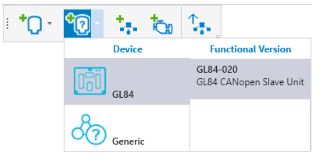
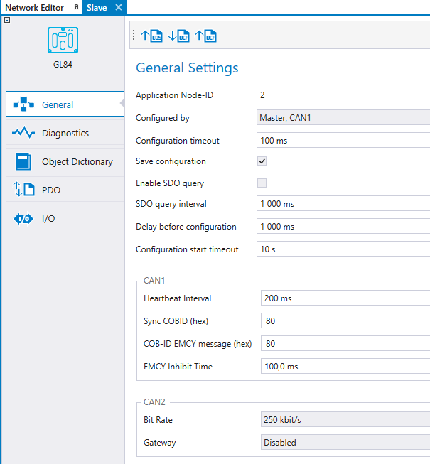
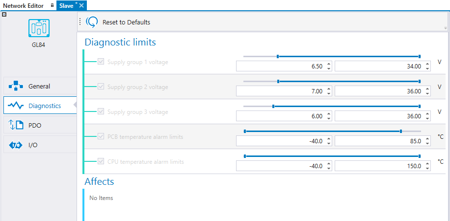
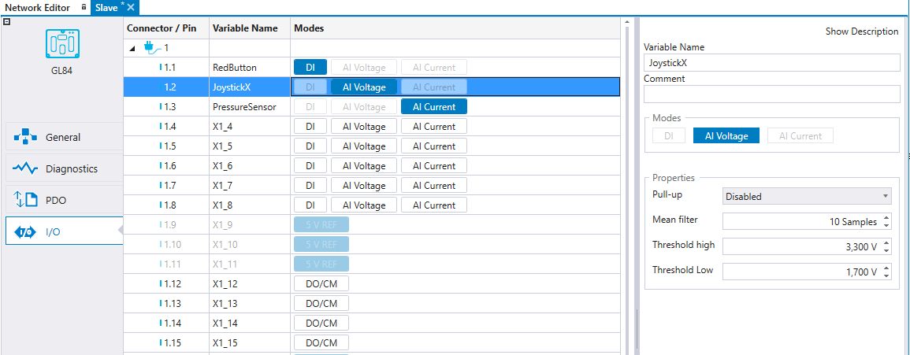
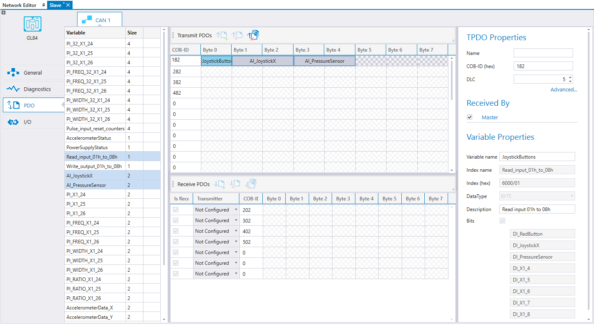
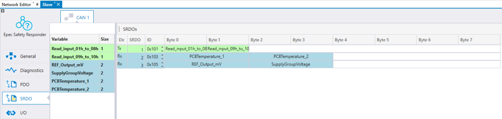

This topic describes CANopen slave configuration of Epec slave Units. A master unit is needed to control a slave unit; slave units are not programmable.
1. Click the Add slave Unit on the Network Editor

2. Select the Device type and Version to add the device to the MultiTool Creator project.
3. Add a programmable Epec device to the MultiTool Creator project.
4. Add both of the devices to the same network (Adding, Editing and Deleting Network).
5. Monitor the slave device by the programmable Epec device. Double-click the Epec device and select the slave device to be monitored on the CAN tab > Network Monitoring (Monitoring Other Devices).
To select the programmable device that configures the slave device, double-click the slave device and select the programmable device listed in the Configured by drop-down menu under General Settings.
The programmable device that configures the slave device must be NMT master.
|
Setting |
Description |
|
Configuration timeout |
The timeout for configuring one object dictionary index. |
|
Save configuration |
Save configurations to slave unit's nonvolatile memory. This expedites the system's boot up because the slave needs to be configured only when the desired configuration is changed or the slave unit is changed to other one. * |
|
Enable SDO Query |
Enables the sending of consecutive SDO queries to node, to determine its presence.* |
|
SDO query interval |
Interval time (ms) for consecutive SDO queries.* |
|
Delay before configuration |
Delay (ms) that configuration waits after reset before operation.* |
|
Configuration start timeout |
Delay time (s) of BusNotOk error. Possible SDO polling is also stopped after delay.* |
*visible if the selected master unit supports these features.

The diagnostic limits can be adjusted. The slave device sends an emergency message (EMCY) if the value exceeds the diagnostic limits.

Configuring I/O for slave devices is similar to configuring I/O for programmable devices. See Configuring I/O

PDO settings can be defined in the PDO tab. The contents of PDOs can be defined. Also, the Event Time, Inhibit Time and Transmission Type can be configured. The master device writes PDO mappings and configurations to the slave device upon startup.
The PDOs sent by the slave device can be received by either the master or any other device on the bus by selecting the receiving device on Received By list.
PDOs received by the slave device are not automatically added to the master device's transmit PDOs. The transmitter can be selected from the received PDO's drop-down. For more information, see section Transmitting and Receiving PDOs.

SRDO settings can be defined in the SRDO tab. This view shows all the SRDOs that are defined in EDS and SRDO can not be removed. Also, the Information Direction, Refresh Time, Safety Cycle Time, SR Validation time are configurable in the SRDO tab. The master device writes the SRDO mappings and configurations to the slave device upon startup if Write configuration is set ON for the SRDO.
The SRDOs sent by the slave device can be received by either the master or any other device on the bus by selecting the receiving device on Received By list. The master unit is automatically set to receive all enabled SRDOs from the slave. SRDOs received by the slave device are automatically added to the master device's transmit SRDOs, but they can be changed there. For more information, see section Transmitting and Receiving SRDOs .
Variables on the left side are color coded according to where the variable can be mapped. Read only indexes are colored as green and can only be mapped to TxSRDO. Write only indexes are colored as light blue and can mapped only to RxSRDO. Read and write indexes color is purple and can be mapped both TxSRDO and RxSRDO.'
Variables can be dragged and dropped to SRDO messages. Note that only the plain variable must be added to each SRDO message. The inverted variable is automatically added and not shown in the user interface.

Epec Oy reserves all rights for improvements without prior notice.
Source file topic200012.htm
Last updated 25-Jun-2025